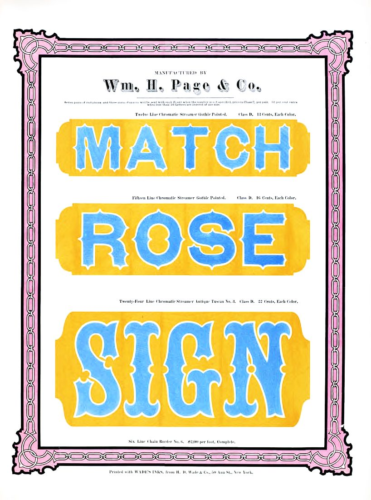
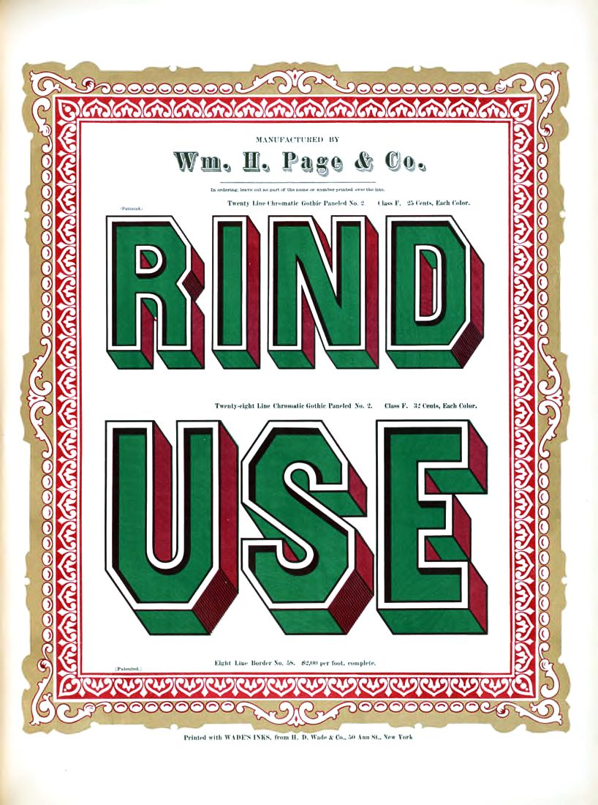

References / Type specimen / 573
Wm. H. Page & Co.,
*Specimens of Chromatic Wood Type*
The 1874 colour specimen book of the largest American wood type maker of its day, showing Tuscan, pointed, and shaded letters cut as separate blocks for each ink.
- Source
- Internet Archive (Columbia University Libraries): Specimens of chromatic wood type, borders, etc.
- Creator
- Wm. H. Page & Co.
- Made
- 1874
- Style
- Victorian typography (agent-proposed, not yet reviewed by a person)
- Moods
- Showy, festive, crafted
- Evidence
- Inspected two plates through Commons copies of photographs by Flickr user CircaSassy (818 × 1100 px each): Tuscan plate and paneled gothic plate. The uploader names the Columbia scan as the source. I read the Internet Archive metadata, not the scan itself.
- Reviewed
- Rights
- Open license, stored. License: CC-BY-2.0. Rights policy


Context
The Internet Archive record gives the title, Greeneville, Connecticut, 1874, [98] leaves of colour illustrations, 47 cm, contributed by Columbia University Libraries, with the rights note “Digital version available with no restrictions.” archive.org.
Wikipedia says William H. Page was one of the larger wood type makers until the 1880s, and that wood type came in widths from condensed to ultra-wide. Wikipedia: Wood type.
Each plate gives the type’s size in “lines” (picas) and its price per letter “each color”, and is “Printed with Wade’s Inks, from H. D. Wade & Co., 50 Ann St., New York.”
Observed
- Tuscan plate: the words MATCH, ROSE, and SIGN in light blue letters with white outlines on ochre panels with notched ends. The letters have pointed spurs and, in SIGN, forked Tuscan serifs.
- Tuscan plate: a pink and black chain border with interlaced corner pieces frames the page.
- Paneled plate: RIND and USE in green capitals with a white inline, a black outline, and a deep red three-dimensional shade, in two sizes.
- Paneled plate: a red border of repeated heart-shaped ornaments inside a gold scroll border.
- Small centred lines of roman text name each face, its size in lines, its class, and its price.
- The maker’s name at the top is set in a shaded slab with a drop shadow.
Why it belongs
The book shows how printers got colour and depth from letterpress: separate wood blocks for the face, the outline, and the shade, printed one ink at a time.
Its letters are the vocabulary of the late wood type poster. The chromatic sets were the expensive end of a range that most country printers used in black.
Borrow
Build a display letter from layers: a fill, a contrasting inline, and an offset shade in a third colour.
Frame a page with a repeating border and separate corner pieces.
Measured
Machine-extracted by tools/image-traits.py on . Full measurement.
- Mean chroma
- 0.23
- Palette
- #ffffff 47%
- #fbc82a 15%
- #69c0fc 4%
- #5ab4fb 3%
- #fdc7ea 3%
- #b398a7 2%
- #040304 2%
- #9d8592 2%




